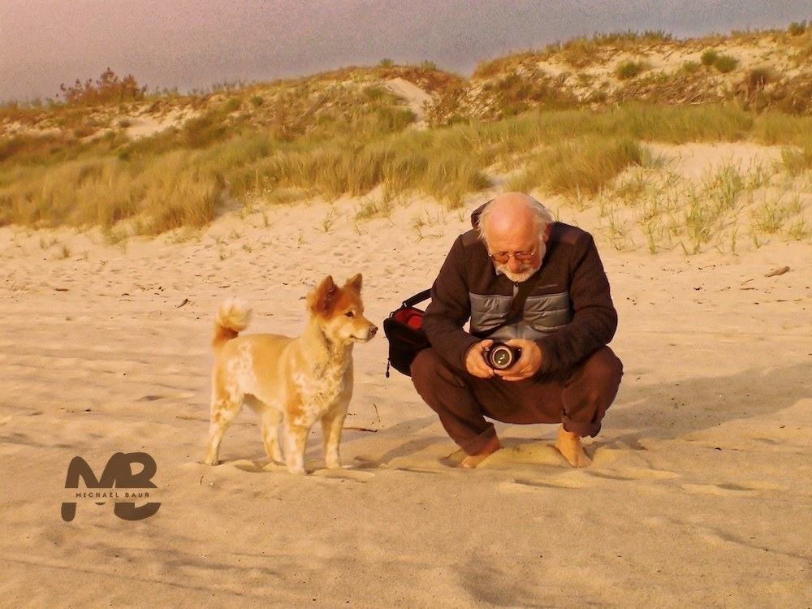

Wer steckt dahinter?
Drei Jahrzehnte Biologie, Chemie und Kreidestaub an der Gesamtschule Hungen waren der Anfang. Um die Jahrtausendwende obsiegte die digitale Neugier: Ab 2001 ging es als Fachberater für Medienkompetenz und Redakteur beim Hessischen Bildungsserver in die Online-Welt.
Inzwischen bin ich im offiziellen „Unruhestand“ angekommen – was im Klartext bedeutet: Endlich Zeit für all die Projekte, die schon viel zu lange in der Warteschleife hingen!
Neben meinen ehrenamtlichen Coachings für Neue Medien und meiner Tätigkeit als VHS-Kursleiter gehört dazu nun auch die Entwicklung dieser App – ein Versuch, Wissen, Neugier und ein bisschen Freude am Entdecken zusammenzubringen.
Diese App ist handgeprüft, aber nicht handgeschnitzt: Einige Inhalte entstanden mit KI-Unterstützung und wurden anschließend von mir überarbeitet.
Möge sie der Einen oder dem Anderen als digitaler Feldstecher für die heimische Tierwelt dienen. Klick dich schlau! 😉

Draußen unterwegs – am liebsten mit Hund und Kamera.